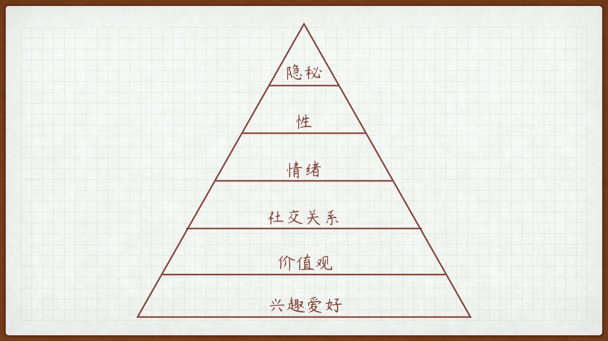

- 00 开篇词 爱与被爱，是人一生最值得学习的能力.md.html
- 01 是终点也是起点：你的恋爱目标是什么？.md.html
- 02 拒绝焦虑状态：TA到底爱我吗？.md.html
- 03｜冒犯有时是必要的：如何开启一段亲密关系？.md.html
- 04 亲密关系的本质是分享：如何把握暧昧的窗口期？.md.html
- 05 创造型与消费型活动：两个人在一起没事干怎么办？.md.html
- 06 小心看上去平平无奇的陷阱：如何防范高级渣？.md.html
- 07 无法回避的现实问题：“亲对象”也要明算账？.md.html
- 08 七年未必痒：如何营造亲密关系的新鲜感？.md.html
- 09 相亲与恋爱套路不一样：相亲有哪些需要注意的？.md.html
- 10 恋爱成功不是只有结婚一条路：分手是我错了吗？.md.html
- 11 独身主义也不赖：选择不结婚究竟是选择了什么？.md.html
- 12 姐弟恋也很可爱：姐弟恋有什么好处和注意事项？.md.html
- 13 千古难题真难办：如何跨越家庭背景的差异？.md.html
- 春节加餐1 公主，快放开那只巨龙！.md.html
- 春节加餐2 恋爱课答疑集锦：人潮之中彼此相视而窃喜.md.html
- 春节加餐3 恋爱课直播集锦：恋爱这件小事儿.md.html
- 结束语 但行好事，莫问前程.md.html
- 捐赠
04 亲密关系的本质是分享：如何把握暧昧的窗口期？
我曾经做过一个小调查，问很多情侣这样一个问题，“你们在这段感情中印象最深刻，让你最心动的事情是什么？”
事情当然各不相同，但发生的时间惊人一致，百分之七十都发生在暧昧期。
大家普遍反映，在暧昧期的时候，对方的一举一动都会引起自己几分猜想，两个人相处时还带着点拘谨和不自然，会不停地试探，试探中带着点期待，没有哪个阶段会这么让人心跳不已了。
的确，从心理学的角度来讲，有理论说一个情绪周期是 28 天的，还有说新鲜感只能维持三个月的，还有从生物学角度分析激素分泌周期的。但是，无论我们采取哪一种说法，男男女女在一起确实有个微妙的窗口期。
在这个窗口期，双方既建立了初步的信任，又还保留着神秘的面纱，相互之间吸引力、安全感都处于最佳状态。我们管这个窗口期就叫作暧昧期，把握住这个时期，升级关系会事半功倍。
所以，这一讲我们就来聊聊，在这段非常关键的暧昧期，我们应该做些什么。
怎样判断自己处于暧昧窗口期？
在分析应该做什么之前，我们得先学会判断自己和对方真的进入了暧昧期。不光可以检查自己是不是想多了，还可以及时适当地提醒自己，该改变自己的状态和心态，来迎接这一阶段。
从我接触过的人来看，最短的认识一天就开始暧昧，最长的我见过维持了八个多月的。暧昧这件事，不像炒菜，有个煎炒烹炸的时间指标，而是一种感觉指标，偏感性。
所以，要记住，我们不能用时间的长短来判断是否进入了暧昧窗口期。
其次，暧昧的核心感觉是不确定性，既对对方的心意不确定，也对自己的心意不确定，正是这种不确定加强了这段关系的吸引力。这就好比 100% 获得两千万和 10% 的机会获得 10 亿，虽然后者的收益期望值比前者高五倍，但绝大多数人仍然愿意选前者，这叫风险厌恶。但是同理，当你打牌赢了上万块时获得的愉悦感，远远超过月底搬砖结工资时候获得那约定好的上万块。
所以，如果说恋爱像是发工资，暧昧就像是赌博，同样是收钱，但心态和感觉完全不同。
根据暧昧的这种特点和性质，我总结了以下进入暧昧期和退出暧昧期的几个标志。
进入暧昧期的三个显著标志
第一是特别感。
特别感是一种神奇的感觉，张无忌遇到周芷若可以感觉很特别，胡一刀遇到苗人凤可以感觉很特别，郭靖遇到男装的黄蓉也可以感到很特别，令狐冲遇到老丈人任我行同样可以感到很特别。
特别感就是一种独有的吸引力，大千世界、芸芸众生，唯有在你身上见到这种别样的特质，这当然是一种好感。同时表达特别感又很安全，朋友之间、对手之间、恋人之间都可以有特别感。
因此，一旦有异性表示，你在任何一个方面有 Ta 从未遇到过的特别之处，哪怕是一个很奇怪的特别，都说明你俩关系可能已经进入暧昧期。
此时此刻的你，至少已经与别人不一样，值得 Ta“另眼相待”。
这个时候，你看诸葛丞相说的那句“我从未见过如此厚颜无耻之人”，是不是有种万人会场公然秀恩爱的 cp 感了？
第二是细节感。
如果说特别感是一种吸引力，那么细节感就是一种注意力。
比如说，你随口说过的一句话，做过的一件事甚至是一桌人聚餐时多吃了两口喜欢吃的菜，这些小小的细节，却被对方不经意间都记在心里，那么你们细节感就很满了。
特别感是因，细节感是果，在这个注意力极其珍贵的移动互联网时代，能够在你身上投入相当程度的细节记忆力，已经充分说明了你的重要性。但同时，表达细节感的时候又带有一点犹豫。
毕竟，一个细心的人、体贴的人对谁都可以满满细节感，也不能实锤就是喜欢吧。所以，如果出现了这种欲说还休的感觉，把细节感的张力拉满，这就是一种暧昧的小表现。
第三是抗拒感。
我们刚才说了，暧昧的本质是不确定性，那么抗拒感就是不确定性的原因。所谓暧昧，一定是两个人互有一定好感的同时，还有一定防备。这种抗拒感可能因为抗拒确立双方关系，也可能是抗拒关系太快发展、抗拒肢体接触、抗拒主动表白、抗拒在朋友前暴露对方存在等等……
金海心有首歌，叫《那么骄傲》，里面有句歌词是，别那么骄傲，我随时可能走掉。而这种随时可能失去对方的抗拒感，却恰恰是暧昧期特有幸福感的重要来源。
如果出现以上三个信号，那么恭喜你，大概率你和对方已经进入暧昧窗口期。
当然聪明如你，看到这里肯定也想到了，这不仅是个判断标志，也是实操手册。如何与异性营造暧昧氛围，按着这三条来，不比买个花、点个蜡烛什么的来劲多了。给你举几个例子：
偶尔表达对方的特别感，“哇，你是我遇见过的姑娘里面，第一个会自己动手装家具的耶。”
在不经意间表露自己的细节感，“哈哈，你上个月有一次听这首歌的时候循环了好几遍，我就猜你喜欢这首歌~”
在安全范围内，制造一点点抗拒感，“今天聊得很开心，明天还要上班，早点休息吧。”
退出暧昧期的三个显著标志
如果在窗口期，你没有果断把握机会，随着时间流逝、生理心理各种因素共同作用，你们也许就会失去成为恋人关系的可能，向好朋友的方向狂奔。所以能识别退出暧昧期的标志也很重要。
第一，抗拒感逐步消失。
有人觉得，抗拒感逐步消失是不是说明对方在接受我？不是的，因为如果你在暧昧期没有什么有效行动的话，抗拒感逐步消失的更大一种可能就是，你的异性吸引力在逐步消退。
可能以前拒绝你晚上来家里坐坐，是怕控制不住自己和你擦枪走火。现在邀请你进屋，不是同意和你做点什么，反而是笃定你俩啥也干不了。是你在对方眼里的异性攻击力不断消退，显得越来越安全，所以人家不拒绝和你进一步深入接触。
这也就是为什么一旦成了朋友，再想转身份成为恋人就会难度翻倍！
第二，开始公然损你。
你知道暗暗喜欢你的朋友和真正朋友之间最大的区别是什么吗？
真朋友可能会在别人面前损你，抖你的糗事；但喜欢你的人，私下里或许也会挖苦你几句，但在有其他人在场的情况下，Ta 绝对会小心翼翼地避过所有可能让你没面子的事情。所以，当对方开始频频当着其他人的面，毫不顾忌开玩笑嘲讽你的时候，你们的暧昧期就即将到头了。
第三，规律性逐渐增强。
暧昧的核心在于不确定性，而这种心理感觉消失的表现就是一切可预测。
本来两个人是忽冷忽热、忽近忽远的关系，现在两人关系在靠拢的过程中形成了平衡。每天固定会聊天道晚安，每周固定时间约会吃饭，互相了解程度增加，你说 A 大概率猜到对方会说 B。当两个人一切互动开始不可避免地固化之后，暧昧的因素也就即将消失了。
所以，当以上三个情况逐一出现时，暧昧窗口期即将关闭，此时你必须抓紧时间、加快进度了。
不过，和暧昧期即将关闭相比，还有一种情况我们需要注意，就是恶性暧昧关系。
什么是恶性暧昧关系？在异性关系的发展过程中，自然进入的暧昧关系，终点指向确定的恋爱关系，可以称之为良性暧昧关系。然而恶性暧昧关系，指的是不想承担责任，不愿给予承诺而只享受暧昧的红利。如果你遭受这种关系，你必须学会坚决斩断。
良性暧昧关系和恶性暧昧关系的区别主要有三点：
一是良性暧昧的感觉是双方，恶性暧昧的感觉是单向的；
二是良性暧昧关系可互动可升级，恶性暧昧关系始终无法升级；
三是良性暧昧关系的发起方抗拒感较弱，恶性暧昧关系的发起方反而抗拒感较强。
最后，恶性暧昧关系的时间一般长于良性暧昧。
窗口期最重要的任务
我们现在已经学会如何分辨暧昧窗口期的进入和退出“标志”了，那么，我们在这段重要和关键的时期，到底应该做什么呢？仅仅是说几句话术，多约出来见几次面吗？
并不是。暧昧窗口期最重要的任务，就是借助这段时间特有的吸引力，迅速升级双方关系。那么问题来了，亲密关系或者说恋爱关系的本质是什么？什么叫升级关系？
血缘关系很简单，看 DNA；雇佣关系也很简单，看合同。那亲密关系看什么？有人觉得相互确认关系就是情侣，也有人觉得对外宣布关系了才算情侣，还有人觉得要上了几垒才算情侣。
但是，现代社会越来越开放，就算上了本垒也未必就能成为情侣。在我看来，所谓关系，更多是精神上的定义，也是更稳定可靠的定义。恋爱关系的核心在于信息交互！
信息交互的层级决定了两个人关系的远近，交互层级越浅，可交互人数就越多，关系就越疏离；交互层级越深，可交互人数也就越少，关系也就越亲密。
比如说，如果有一个异性和你成为少数一两个可以相互交换某些深层次信息的时候，注意！是相互交换。无论你们有没有表白，你们已经实质上进入一段亲密关系中了。

我粗略地将信息交互的层级分为六层：
\1. 兴趣爱好
这是非常开放的信息，也是作为朋友的起步层级。
如果两个人之间愿意交流兴趣爱好，在一起打牌、玩游戏、看话剧等等，并就这些爱好展开聊天互动，就可以成为朋友。这个层级人数最多，也是你和异性之间互动的起点。
\2. 价值观
这个信息相对私密，起码要进入密友的程度，才会围绕这个主题展开信息交换。
你很难想象两个相识不久，只是在一起作为牌搭子的人会在一起谈人生、谈理想、谈未来，那是很尬的。能谈这些的，一定得是非常好的朋友。当你和某个异性进入这个话题，说明你们之间关系已经开始不一般，有一些感觉了。
\3. 社交关系
每个人都有自己的核心社交圈，当你向某个人开放自己核心社交圈的时候，这个人显然已经是你极其亲近的人。当你和异性能够频频地、又自然地出现在对方核心社交圈内，无论互相怎么介绍，在旁人看来，你们之间肯定有点什么了。
\4. 情绪
成年人的世界没有容易二字，崩溃都需要找个合适的时间。分享情绪信息给他人是一件非常危险的事情，一般也只有家人会无条件接受你的情绪输出。所以说，当你能够和一名异性在任意时间分享情绪信息的时候，你们可以说已经实质上建立了情侣关系。
\5. 性
滚床单不等同于性层面的交互，其实握个手、抱一抱都算作这方面信息的交互，当然了，滚床单也可能完全不涉及这个层级的互动。语言、肢体甚至眼神都可以是这个层级交互的媒介，而这也是可能恋爱甚至结婚多年都达不到的交互层级。
\6. 隐秘
人心里都有一个隐秘的角落，藏着自己不为人知的秘密、不堪回首的事情，这是一个人最软弱的要害。当你可以放心和一个人互相分享这个隐秘的角落时，你们已经成为密不可分的整体了。
窗口期最重要的任务，就是根据这个信息交互层级，一层一层地深入下去。主动方首先表露自身某个层级的部分信息，然后引导对方表露。当双方都可以稳定开展某个层级的信息交互后，就可以开启下一个环节了，亲密关系就会越来越近。
这个进度表最大的好处在于，不会给你们之间带来很多压力。云淡风轻一层层聊下去，每一层都很自然，也不像送人礼物，约会吃饭之类的需要承担被追求的压力。
比如说，当你们都开始顺利交换情绪信息，人家什么开心的事先告诉你，难过的事情也告诉你后，在你这里寻求你给 Ta 的情绪支持，那你还要表什么白呢？
但是，注意，千万不要越级自爆。刚刚认识一个同样喜欢打游戏的异性，一起玩了几把游戏，你就直接越级去聊性话题，就自爆内心最深处的秘密，那叫交浅言深，毫无效果且危害极大。
粉红色的回忆
曾经有个颜值不错，性格更加不错的姑娘问我，为啥感觉对她有意思的男生不少，但最后都处成了兄弟？我只能告诉她，搞对象如同烹小鲜，火候没到贸然越界会吓跑对方；火候过了又失去新鲜感只能做好朋友，必须把握这个既熟悉又陌生的机遇期。
《倚天屠龙记》里面我最喜欢的赵敏，她就非常善于把握时机，绿柳庄初见张无忌时，虽然敌友难辨，她也疯狂秀了自身的价值，之后又狠狠坑了张无忌的明教一把。张无忌为了逼问离开陷阱的方法，把赵敏的鞋袜都脱了搞人家的 jio，这时候气氛已经有那味了。
不过两个人初次相见，相互之间防备心还很重，赵敏就啥也没说。直到武当山交锋，互有胜负后赠珠花示好，升级暧昧气氛，元大都再遇后才开始表露心迹，节奏这块拿捏的死死的。
回到今天一开始我说的那个调查，难道确定关系后的热恋期不香吗？为什么这么多人对暧昧期的印象如此之深？因为，暧昧期的确有它的魅力所在，你看电视剧里那些处于暧昧期的小男生小女生，看个电影吃爆米花，只是手不小心地碰到了，两个人就脸红心跳个不行。
在暧昧期，你爱的那个人仿佛身上有光，你看 Ta 的时候眼里都自带滤镜；你们不需要多大的磨合，Ta 说什么你都爱听，更没有柴米油盐的烦恼，让你们疲于生计，忘了爱情。
“虽然我不确定会不会真的喜欢你一辈子，但是，当下爱你的程度，让我想说出这句话。”
爱情锦囊
暧昧是恋爱的窗口期，是双方安全感和神秘感处于最佳状态的机遇期。
尚未进入暧昧窗口期，两个人恋爱火候还没到，推进关系可能会把人吓跑；已经退出暧昧窗口期，两人恋爱火候已老，推进关系变成朋友兄弟。所以要精确判断窗口期的进出标志：
进入标志：1. 特殊感；2 细节感；3 抗拒感。
退出标志：1. 抗拒感逐步消失；2. 开始公然损你；3. 规律性逐渐增强。
还要强调一句，面对恶性的暧昧关系，一定要学会立即斩断。
恋爱关系的核心在于信息交互！窗口期就是要推进信息交互层级的深入。
六个交互层级层级越浅，关系越疏离；层级越深，关系越紧密。两个人交往中表白不重要，能够交互什么信息很重要，真正的高手都是在不知不觉之中拉近双方关系的。
我知道，你也知道，我们有一天可能会分开，但都不知道是哪一天。
或许是明天，或许是永远——暧昧让人最难受的是不确定性，让人最惊喜的也是不确定性。愿你珍惜这段暧昧时光，也愿你能找到那个让你在不确定中相信确定的那个人。
© 2019 - 2023 Liangliang Lee. Powered by gin and hexo-theme-book.